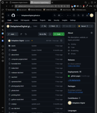

Website Architecture & Deployment
A technical breakdown of how I designed, structured, hosted, and deployed this website using static HTML, CSS, custom DNS configuration, and GitHub Pages.
Project Overview
I built this website as a custom portfolio and business presence for Delaplaine Digital Solutions. Rather than using a website builder or a heavy framework, I wanted a site that I fully understood and controlled from top to bottom.
The goal was to create a clean, lightweight, professional website that could showcase my photography, vehicle projects, computer projects, and 3D printing work while also serving as an example of my technical ability. This project includes manual page design, asset organization, GitHub-based deployment, domain configuration, and performance-focused decisions for image-heavy content.
Goals
From the start, I wanted the site to be simple, fast, and easy to maintain without depending on unnecessary plugins or bloated tools.
- Build a custom website using HTML, CSS, and light JavaScript
- Create a professional online presence for Delaplaine Digital Solutions
- Host the site reliably using GitHub Pages
- Connect a custom domain for a polished public-facing presence
- Keep the design lightweight for performance and easier troubleshooting
- Organize images and project pages in a way that scales as more content is added
Core Technologies
This website was intentionally built with a simple stack. I chose static HTML and CSS because they provide full control, low overhead, and a smaller attack surface than many dynamic website platforms.
- Frontend: HTML, CSS, and lightweight JavaScript
- Hosting: GitHub Pages
- Domain provider: Namecheap
- Version control: Git and GitHub
- Image organization: manually structured asset folders and thumbnails
Site Structure & Organization
One of the most important parts of this build was organizing the site so it would be easy to expand over time. Instead of treating it like a single-page portfolio, I structured it around separate sections for photography, vehicles, computer projects, 3D printing, and supporting pages like About.
I also organized images into dedicated asset folders so the site would stay manageable as more photos and project screenshots were added.
- Main pages: Home, Photography, Vehicles, Computer Projects, 3D Printing, About
- Project pages: individual write-ups for technical builds and experiments
- Image folders: separated by category for easier updates and cleaner links
- Thumbnail folders: used to improve load times on image-heavy pages
Design Approach
I wanted the site to have a dark, modern look while remaining readable and professional. The design focuses on strong contrast, simple navigation, consistent project cards, and enough flexibility to support both visual galleries and technical write-ups.
Rather than relying on templates, I built the styling around reusable sections such as navigation bars, project cards, image grids, subtitles, and footer elements. This made it easier to keep the site visually consistent across multiple pages while still allowing each page to have its own content and layout.
Hosting & Deployment
The website is hosted through GitHub Pages, which provides a simple and reliable way to deploy a static site directly from a GitHub repository. This made it easy to update pages, push changes, and keep the site version-controlled.
Each update is made locally, committed through Git, and then pushed to the repository, where GitHub Pages publishes the updated version. This workflow keeps deployment straightforward and makes it easy to track changes over time.
- Repository-based deployment through GitHub
- Static site hosting with no backend required
- Version control for safer edits and ongoing improvements
- Simple publishing workflow for updating content

DNS & Custom Domain Configuration
To make the site look more professional, I connected it to a custom domain through Namecheap instead of using only the default GitHub Pages address. This required configuring DNS records correctly so the domain would point to the hosted site.
Once DNS was configured, the site could be reached through my branded domain, which made the project feel far more complete and professional. I also worked through the usual challenges that come with DNS propagation, record setup, and GitHub Pages certificate generation.
- Domain registration: managed through Namecheap
- DNS records: configured to point the domain to GitHub Pages
- HTTPS: enabled through GitHub Pages certificate support
- Custom domain: used for a cleaner and more professional presentation
Performance & Image Handling
Since this website includes photography and project images, performance was a major concern. Large images can slow down page loads, especially when full-resolution files are used directly in gallery pages.
To improve usability, I worked on organizing full-size images separately from smaller thumbnail versions. This reduces loading time on gallery pages while still allowing users to click through to larger images when needed.
- Separated thumbnails from full-resolution images
- Reduced page weight for image-heavy sections
- Improved gallery responsiveness and usability
- Kept asset folders organized for easier expansion later
Security & Technical Considerations
One benefit of building this site as a static website is that it avoids many of the common risks that come with database-backed or plugin-heavy platforms. There is no public login panel, no server-side application stack to maintain, and fewer moving parts overall.
I also intentionally kept JavaScript lightweight and limited the number of third-party dependencies. That approach helps reduce complexity, improves performance, and keeps the website easier to maintain over time.
- Static architecture with no backend database
- Smaller attack surface than many CMS-based sites
- Minimal JavaScript and third-party dependencies
- HTTPS-enabled public access
Challenges & Lessons Learned
Like most technical projects, building this site involved problem solving along the way. A few of the challenges included getting the custom domain working correctly, waiting for HTTPS provisioning, organizing large numbers of images, and dealing with file naming consistency across deployment.
Working through those issues helped me better understand the relationship between local files, GitHub hosting, DNS, asset management, and how small details like capitalization in filenames can affect a live deployment.
Why I Built It This Way
I wanted a site that represented both my work and the way I approach technical projects. Building it by hand gave me full control over structure, performance, organization, and future growth. It also let the website itself become part of my portfolio rather than just a container for other work.
This project reflects the same mindset I use in IT and homelab work: keep systems understandable, reduce unnecessary complexity, and design with maintainability in mind.
Future Improvements
The current version of the site already works well, but I plan to continue improving it over time. Future upgrades may include additional project pages, more polished gallery behavior, better image optimization, and expanded write-ups for networking, cybersecurity, and system administration projects.